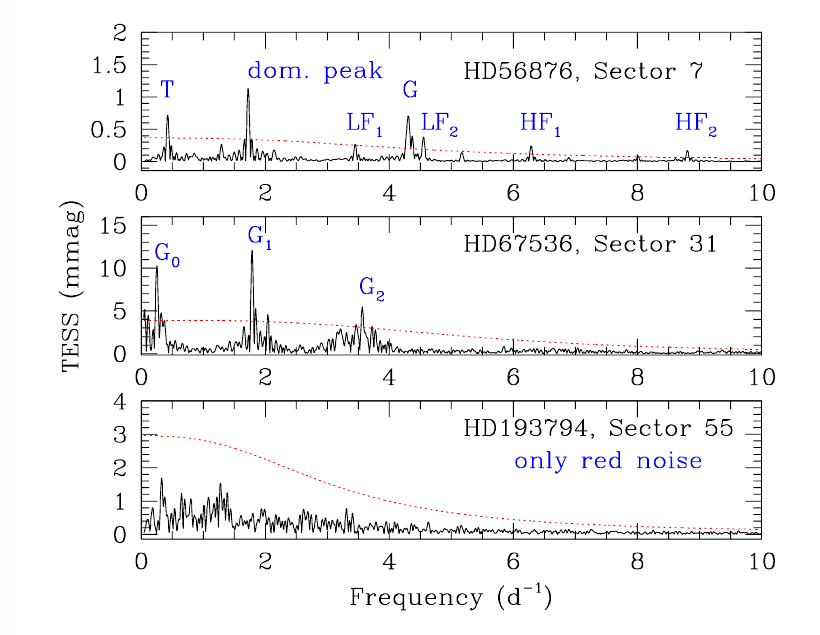
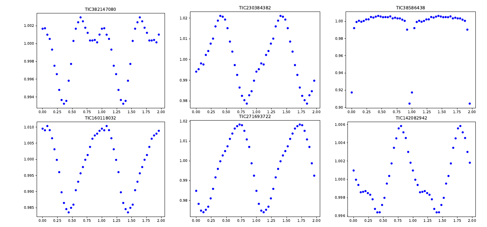
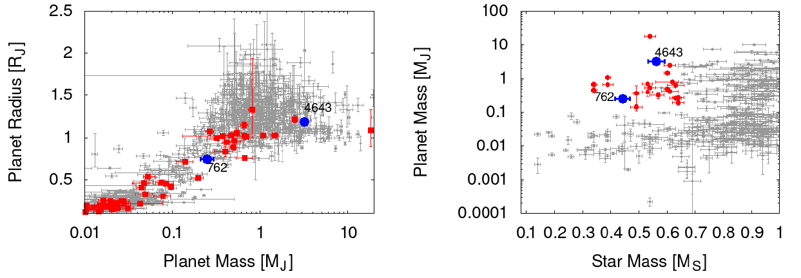

Welcome TESS followers to our latest news bulletin!
This week, we are looking at three recent papers from the archive. Enjoy!
Searching for stellar cycles on low mass stars using TESS data (Ramsay et al. 2024) :
Low mass stars represent the majority of the stellar population in the Galaxy. Thus, they are important both in terms of stellar astrophysics and of the search for exoplanets. Many of these stars are active, some are fully convective, and their relatively small size makes it easier to detect transiting planets. Ramsay et al. (2024) present a pilot study of the dominant periods in TESS lightcurves of low mass stars, and a search for long-term stellar activity cycles. The authors examined a sample of 1950 M dwarfs (stellar type later than M0V) on or near the main sequence, residing in the north and south continuous viewing zone of TESS, and located within 100 pc from the Sun. For comparison, Ramsay et al. (2024) also studied a sample of 1432 Sun-like stars (stellar type F5V to K2V) fulfilling the same constraints. The targets were observed by TESS in full-frame image cadence in Sectors 1-61, and the authors required that each star is observed in at least 6 Sectors. Utilizing the TESS-SPOC data, Ramsay et al. (2024) performed a Generalized Lomb Scargle Periodogram analysis to search for evidence of periodic lightcurve variability and, if present, for variations in the corresponding amplitude. The authors found that 245 of the 1950 M dwarfs (~12.6%) exhibit strong evidence of stable photometric variability, which they attribute to stellar rotation. The variability fraction among the sample of 1432 Sun-like stars is comparable, i.e. 194 of the 1432 targets (~13.5%) show clear lightcurve modulations. In contrast, Ramsay et al. (2024) found that many more low mass stars produce stable long-term variability compared to Sun-like stars for periods shorter than about 4 days. Additionally, the authors detected evidence of variability of the photometric amplitude in 26 of the 245 variable M dwarfs, where some show a monotonic trend over the course of 3-4 years or even longer, while others exhibit variations on much shorter timescales. Of the 194 variable Sun-like stars, only one exhibits evidence for significant changes in the corresponding photometric amplitude. Thanks to TESS data, Ramsay et al. (2024) were able to notably expand the number of low mass stars exhibiting rapid rotation and potential activity cycles.
TESS observations of non-Be fast rotators (Naze et al. 2024) :
Non-Be stars are a class of fast-rotating OB stars without known discretion disks. Their counterparts, Oe/Be stars, are likewise rapid rotators that occasionally produce Balmer emission lines. Comparing these two stellar populations sheds light on the importance of disks to the observed variability, and on the physics of stellar rotation. Naze et al. (2024) present a detailed study of fast rotating (Vsini > 200 km/sec) early B-type stars (B0V to B3V) without known disks, utilizing data from Kepler and TESS. The authors investigated the lightcurves of 58 relatively isolated stars, i.e. no known close companions and no bright neighbors within 1 arcmin, with effective temperatures between 17,000 K and 31,500 K, and log(g) > 3.7. TESS observed 56 of the 58 targets, all but one in multiple sectors, in short- and long-cadence; the remaining two targets were observed by Kepler. The authors performed frequency spectra analysis to evaluate the noise properties of the available photometry and search for genuine astrophysical signals. Naze et al. (2024) detected red and white noise throughout the target sample, and found no correlations between various red noise parameters or between these and the corresponding stellar properties. The authors found that long-term variability is not only present in about 20-30% of the target sample, but also dominates the frequency spectra of about one in ten targets, and argue that the occurrence of said variability is notably lower compared to that of Be stars. In contrast, Naze et al. (2024) detected strong frequency groups in about 30% of the target sample, comparable to that of Be stars. The authors note that isolated frequencies in the range of 0.5-6/day are present in about two thirds of the target sample, and dominate the frequency spectrum for 41% of the examined stars, i.e. higher rates compared to Be stars. Similarly, Naze et al. (2024) found that higher frequency signals of up to 40/day are more prevalent in non-Be stars than in Be stars, noting that these signals are rarely dominant. Capitalizing on TESS data, Naze et al. (2024) were able to compare the frequency spectra of a large number of non-Be stars to those of Be stars and find a number of differences and similarities.
TOI 762 A b and TIC 46432937 b: Two Giant Planets Transiting M Dwarf Stars (Hartman et al. 2024) :
Large planets around small stars are important tracers of planet formation and evolution. Of the 20 confirmed transiting giant planets orbiting M dwarfs, 17 have either been detected thanks to TESS, or data from the mission had a major contribution to the discovery. Hartman et al. (2024) present the confirmation of two new short-period, transiting gas giants, TOI 762 A b and TIC 46432937 b, with M dwarf host stars. TESS observed TOI 762 A b at 2-min cadence in Sectors 10, 36, 37, and 63, and TIC 46432937 b at 30-min cadence in Sector 6 and at 10-min cadence in Sector 32. Both planets were initially detected as high-confidence candidates in TESS Cycle 1 observations by several independent efforts, and their transits were successfully recovered in subsequent sectors. To complement the TESS data, the authors obtained photometric and spectroscopic follow-up observations from Gemini-South, LCOGT, La Silla/ExTrA, Trappist, Speculoos, and VLT/Espresso. To derive the physical and orbital parameters of the two systems, Hartman et al. (2024) performed a comprehensive joint stellar and planetary modeling, utilizing Gaia data as well. The authors found that TOI 762 A b has a mass of 0.25 MJup, radius of 0.74 RJup, orbital period of 3.47 days, and equilibrium temperature of 555 K. The host star is an M dwarf with mass of 0.44 MSun, radius 0.43 RSun, effective temperature 3267 K, and age of 9.3 Gyr. The system is a wide binary, with a resolved secondary component with a mass of about 0.23 MSun and at a projected separation of about 320 AU. TIC 46432937 b is an order of magnitude more massive than TOI 762 A b , with Mp = 3.2 MJup, and nearly twice as large (Rplanet = 1.2 RJup). The orbital period of TIC 46432937 b is 1.44 days and the planet has an equilibrium temperature of 872 K. The host star has a mass of 0.56 MSun, radius of 0.53 RSun, effective temperature of 3572 K, and age of 7.4 Gyr. TESS data enabled the discovery and confirmation of two new giant planets in short orbits around M dwarfs, TOI 762 A b and TIC 46432937 b.

Fig. 1: Taken from Naze et al. (2024). Single-sector frequency spectra for three non-Be stars observed by TESS. Upper panel: HD 56876 exhibits isolated signals both low and high frequencies (LF and HF, respectively), long-term variability and red noise. Middle panel: HD 67536 exhibits several frequency groups (G labels). Lower panel: HD 193794 exhibits only red noise. Phase-fold TESS lightcurves for 9 new transiting planet candidates detected in Full-Frame-Image data from Sectors 1-63. Black symbols represent the TESS photometry while orange lines and symbols represent the respective best-fit transit models.
 Fig. 2: Taken from Ramsay et al. (2024). Phase-folded and binned TESS data from a single sector for six M-dwarfs identified as variable among a sample of 1950.
 Fig. 3: Taken from Hartman et al. (2024). Left panel: planet mass vs size for transiting planets around K dwarfs (gray symbols) and M dwarfs (symbols). The two new planets are marked with blue symbols. Right panel: same as left but showing planet mass vs the mass of the host star.